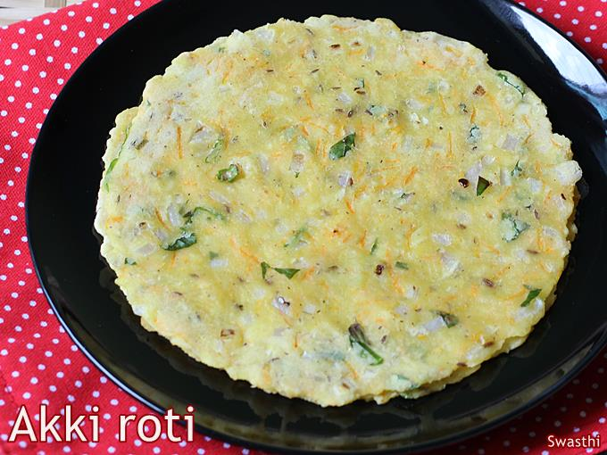

Akki Roti

Akki Roti is a flatbread made with rice flour, spices, herbs and vegetables.
These are a popular Breakfast from Karnataka Cuisine. “Akki” is a
Kannada word meaning “rice” and “roti” are “flatbreads”. So Akki
roti translates to rice roti. These are not only gluten-free but also delicious
& easy to make. Akki rotti are usually eaten with coconut chutney,
but any other chutney, Sagu or mixed vegetable curry goes well.
INGREDIENTS
- 1 cup rice flour
- 1 small onion
- 3 tablespoons coconut
- ½ carrot
- 2 green chilli
- 2 to 3 tablespoons coriander leaves
- ½ teaspoon cumin
- 1/3 teaspoon Salt
- ½ teaspoon ginger grated
- water
- 1 tablespoon oil
PREPARATION
- Wash and chop very finely 1 small onions, 2 green
chilies and handful of coriander leaves. Grate ½ carrot
& ½ teaspoon ginger. If using sabsige, rinse well and chop finely.
- Add 1 cup flour to a large mixing bowl along
with 1/3 teaspoon salt, ½ teaspoon cumin, chopped onions,
chilies, coriander leaves and carrots. Mix everything well. You can
also add about 2 to 3 tablespoons grated coconut & 2 to 3 tablespoons dill leaves.
- Pour water little by little and make a soft dough.
The dough must be smooth and moist. Divide the dough to 4 equal balls.
Roll to smooth. Keep the bowl covered to prevent drying up.
- You can make akki roti on a greased banana leaf, moist handkerchief,
foil or parchment paper.
- Place a ball on the moist cloth or foil or greased banana leaf.
- Begin to spread it lightly with your fingers to make a round roti.
If the edges of akki roti crack, then dip your fingers in water and join the cracks.
Then continue to spread it.
- It can be made thick or thin to suit your taste.
If making thick, make 3 finger sized wholes with one and half inches apart.